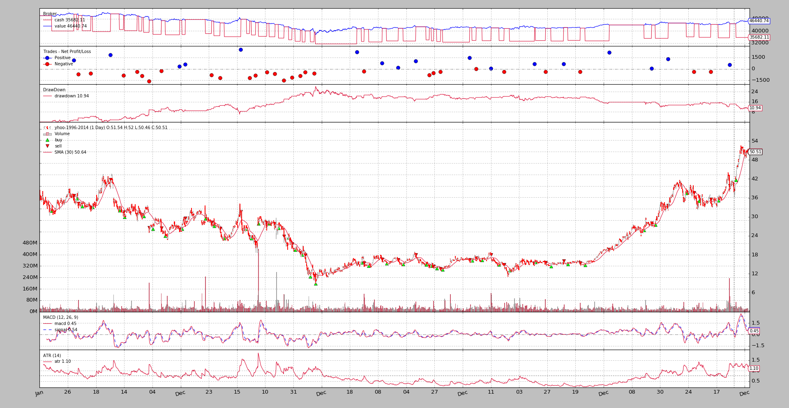

backtrader - Python backtesting¶
backtrader offers a complete backtesting/trading platform with this (not
fully comprehensive) list of features:
- Live Data Feed and Trading
- Datas with different timeframes can be mixed (days and weeks)
- Data Resampling
- Data Replaying (i.e: indicators/strategies see 5 bars in a weekly timeframe)
- Multiple Datas at the same Time
- Multiple Strategies at the same time
- Strategy optimization (including multicore support)
- Indicators (several) which can of course take datas and/or indicators as input
- TA-Lib support
- Plotting support for visual inspection
- Broker implementation with Market, Close, Limit, Stop, StopLimit orders
- Commission schemes supporting futures-like and stocks-like objects and customizable
- Performance analyzers including integration with
pyfolio- Event based (strategy/indicator ‘next’ will be called with all subordinate indicators calculated and data fetched)
- Vector (in the form on inner tight for loops) based for a one shot calculation This applies to indicators ... Strategies always are executed one step at a time
- Natural python language/operations for Indicator development and object comparison/operations (arithmetic, logical operators) As much as permitted by Pthon overriding capabilities (if, and, or cannot be overriden ... but they are provided as logical functions)
- Index 0 approach to access the currently produced (or to be produced) data
- Index -1 approach to access the last produced data (to remain Pythonic)
The Blog Entries¶
Strategy with Signals by mementum on Aug 01
Operating backtrader is also possible without having to write a Strategy. Although this is the preferred way, due to the object hierarchy which makes up the machinery, using Signals is also possible.

MACD Settings by mementum on Jul 30
In the Algotrading site of Reddit I found the following thread:
Pinkfish Challenge by mementum on Jul 29
(Sample and changes added to release
1.7.1.93)
-
Even if backtrader offers an already high number of built-in indicators and developing an indicator is mostly a matter of defining the inputs, outputs and writing the formula in a natural manner, some people want to use TA-LIB. Some of the reasons:

Sizers Smart Staking by mementum on Jul 23
Release
1.6.4.93marks a major milestone in backtrader even if the change in version numbering is a minor one.


{kind=link}